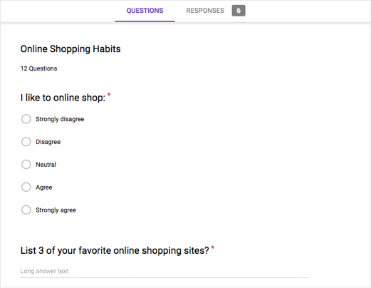

UX Project: Chowpal
An eCommerce food website
Overview
Chow Pal is a national grocery franchise with brick and mortar stores across the U.S. Unfortunately with the increase in online shopping, their market shares have been declining by 8% each year, and they have decided to make a change.
This report includes extensive research I’ve gathered to help Chow Pal have a successful launch into market. Throughout this report, we will cover the following:
- Business Goals
- Competitive Research
- User Personas
- User Surveys and Interviews
- UI Requirements
- Wireframes
- Usability Testing
- Key Findings
- Mockups
Research Phase
Before starting anything else, conducting research by understanding about the company and their goals, as well as the targeted audience, is the most important part of the project. Without knowing who the audience is, it is difficult to design properly to meet the user's needs. Through competitor research, user interviews, and user surveys, I was able to come up with an accurate archetype of who the site should be designed for. Design choices such as color palette, layout, screen flow, site features, and other options all are affected by an understanding of the audience.
Business Goals
Chow Pal needs to reverse their sales decline and hopes to do so through launching an e-commerce platform. Chow Pal will be playing catch-up in the market as currently there are some major players already owning this space.
Chow Pal plans to:
- Expand customer base and market share by allowing their customers to shop online
- Initially launch in 2 cities: New York and San Francisco
- Iterate on learnings from initial launch to expand into new markets
Competitor Analysis
Chow Pal will be entering a crowded market space. An essential part of the research process was to research all the competitor’s websites and investigate the features being offered to the consumer.
After getting a broad sense of the features and competition, a report was compiled with the top 3 competitors. Each feature was divided up into a Feature Matrix. The Feature Matrix consisted of elements that would fall into 4 categories:
- Low Cost, Low Value
- Low Cost, High Value
- High Cost, High Value
- High Cost, Low Value
User Interviews
To gain a sense of who Chow Pal’s target audience is and what their shopping behaviors are, user interviews were conducted. The topics in the interview included internet use, shopping habits, online shopping behavior, and demographics.
Below is an image of some of the interview questions.
Throughout the interview process, notes were taken. Below is an example of the notes taken for this process.

Surveys
Surveys were conducted along with interviews to gain a better understanding of the consumer. The surveys were built using Google Forms and then disseminated to the particpants. All surveys were done anonymously, and data was collected in spreadsheet format.

Below are results collected in the spreadsheet.

User Personas
User Personas were created from the user interviews and surveys. After research, there were 2 audience segments we defined as targets for the brand.
Category 1:
- Busy, working professionals with or without kids
Category 2:
- Elderly men and women who have a difficult time phycially shopping for themselves
After identifying 2 key audience segments, personas were created.
Empathy Mapping
One important exercise in building a defined user audience is the creation of empathy maps. Empathy maps allow us to get inside the head of the user and understand what their day-to-day life is like.
For this specific example, an empathy map was created for the category of elderly men and women. During this process, I looked at areas the product will improve the life of the user and how it will affect their normal day.
Information Architecture
Next in the project was building a solid information architecture that is easily navigated and understood by the user. For this particular project, building a clear and intuitive site flow and heirarchy of pages was extremely important.
A process called Card Sorting was used to build the site map. In this process, I labeled cards with labels of the different products sold, and then asked participants to group them in ways that made sense.
After the groupings were done, I took a picture of their work and compared all of them once finished.
Once the heirarchy was put in place, the site map was created.
User Flows
Understanding how the user will use the site and what important tasks to be performed was essential to the research of this project. The main task of the site is finding a product, adding it to the cart, and completing a purchase. Below is the user flow created for this task.
UI Requirements
After the user research part was getting close to finalized, UI requirements were written up. These included crucial user tasks such as:
- Landing on the home page and looking for items to buy
- Adding items to the cart
- Signing up for an account
- Checking out
Wireframes
Based off of all the previous research and UI Requirements, wireframes were then constructed. A responsive website geared towards all platforms was extremely important, so wireframes were built for desktop, tablet, and mobile.
The following pages were created for usability testing:
- Homepage
- Sign in
- Category Page
- Subcategory Page
- Product Page
- My Account Page
- Added to Cart Page
- Shopping Cart Page
- Begin Checkout Page
- Checkout Process
- Order Confirmation Page
- Thank You Page
Annotated Wireframes were used in the process. Parts of the wireframes were numbered and then were given a brief explanation in the margin.
Responsive Wireframes
Usability Testing
Once the wireframes were completed, usability testing began through the creation of interactive prototypes.
Three different apps were used for usability testing, these included:
- InVision
- Verify
- Usability Hub
Interactive prototypes were created in InVision. A detailed Usability Testing Plan was constructed and participants were recruited.
As part of the testing plan, users were asked to complete various tasks while observations were noted. Tasks included:
- You’ve arrived on this site, and you want to browse the “meat” section. How would you get there?
- You’ve decided you would like to look at the free-range turkey product. Could you bring that up on the screen?
- You’re not quite sure this is the correct product, so you want to see how much sugar is in it. Where would you go to find this information?
A/B Testing was done using the Verify App. Two versions of the homepage were shown to the user and they were asked which one they preferred.
During the usability testing phase, some users noted how difficult it was to find out how to create an account. To further test this, a “Click Test” was created and disseminated using Usability Hub.
Affinity Mapping
Finally, all the data from the usability testing was aggregated and analyzed, and conclusions were made. User recommendations were noted and areas to fix and improve were made.
Exploring UI Styles
Once the research and wireframing phase was completed, I focused on the overall design and look of the pages.
First, I started with the logo. I did a few logo variations and worked on icon design. Below is an example of a part of this process.
Exploring various looks and feels of the site, followed up by a style tile for the chosen look.
Style Tile
From the above designs, a particular design was chosen and expanded upon. For this, a style tile was created. The purpose of the style tile was to give the client a feel for how the site will be designed before all the work goes into the actual mockups.
There was a lot of work that went into the style. This include a finalized logo, and showing that logo on various backgrounds at different sizes. This allows the client to see how that logo would look across various screen sizes and other materials.
Colors were also explored and shown on the style tile, as well as the various button styles.
Finally, samples were shown as to how the imagery on the site should look.
High Fidelity Mockups
The last part of the project was finalizing the mockups and creating a UI Kit. The mockups were created in Sketch and the style tile and wireframes were used as a guide in building them. Mockups were created across all platforms including Mobile, Tablet, and Desktop.


UI Kit
Finally, a UI Kit for the website was created. The UI Kit is a blueprint for the developers to know exactly what colors, font sizes, etc. are used throughout the app.
Next Steps
As always, the design should never be completely finished. In terms of next steps, I would want to set up Google Analytics on the site and dig into the data to see the most popular and least popular products. From there, you could market those products accordingly using different hot spots throughout the site or on the front page.
Adding to that, finding out which products that have higher profit margins and determining how they could be strategically placed on the site would allow for higher sales.
Finally, a digital marketing manager or IT person could help setup funnels throughout the checkout process to see where users are dropping off. This could be a good place to start with looking at elements to redesign during the checkout process to increase conversions.
Conclusion
User research was essential to making this design work. This included looking at ways to create a clear and cohesive architecture of information and navigational elements.
Through competitive analysis, research, and an understanding of ux design, this was successfully implemented, however, like any design, it will need to be monitored and feedback among users will need to be collected continually to ensure there are no additional problems and to improve upon what is already done.